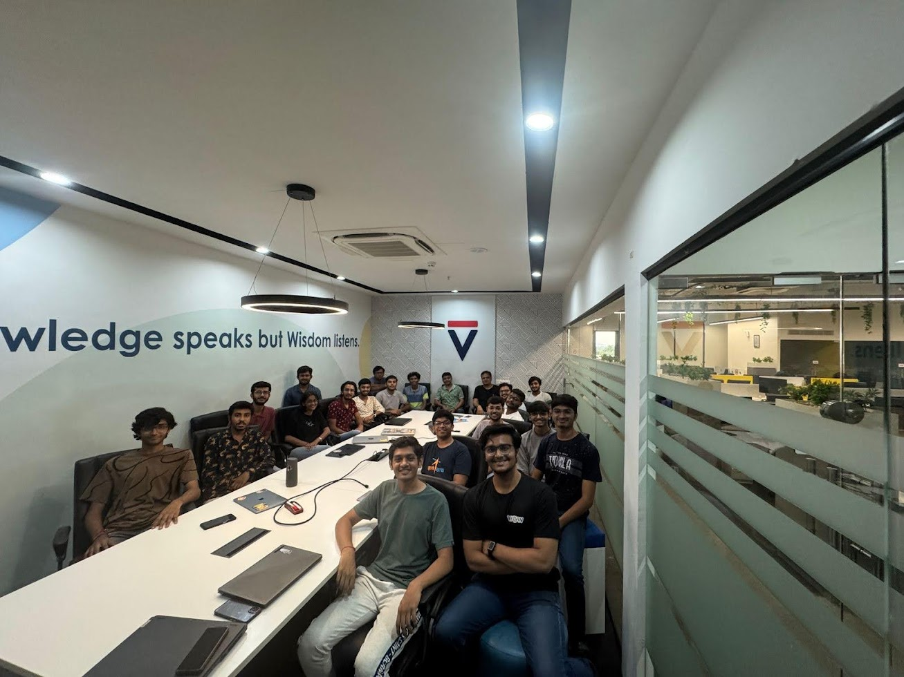

dt: 18/09/2024
WTFathon - we hosted a hackathon
Earlier this month, I and few of my friends hosted a hackathon. It's called WTFathon. The original idea was of Karan. As I have put it in the .txt we were writing when planning for the hackathon,
this is not your normal CRUD hackathon. not limited to just a software. just make us scream what the fuck.
You might have heard of "Stupid Shit No One Needs & Terrible Ideas Hackathon". The goal is to not make something revolutionary, but to enjoy the joy of building it. Don't build something useful. Build something utterly useless. Here you are not held up by any constraints. Build whatever the hell your heart wants. You can search more about such hackathons. There are many hosted across the world with many wild ideas. Banana zipper. Scream bird which is flappy bird, but yes, you scream or a beer selfie stick. The list goes on... There are many across the world, but this is the first hosted in India. This was Ahmedabad's version of it. We even promoted the hackathon on reddit. The post when I posted with a freshly made account was marked as spam, Karan's friends with the moderator of r/ahmedabad. He pinged the moderator and voila, our post was up.
The hackathon was a success. We have a twttr account where we plan to update you with any further fun we might have. Do join if you are in the city. We have photos there too. :)
We still have a lot of plans for the community that we have build. Maybe, a newsletter? maybe, a mailing list? There's a lot to talk about. Here's the group photo from the hackathon. It was a good day. Yes, people showed up.
